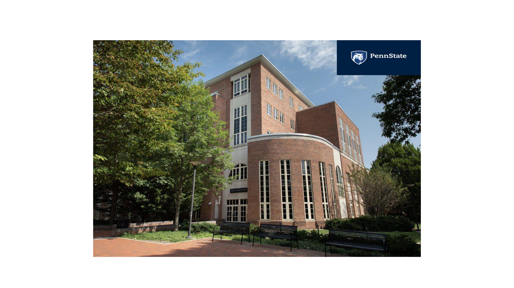
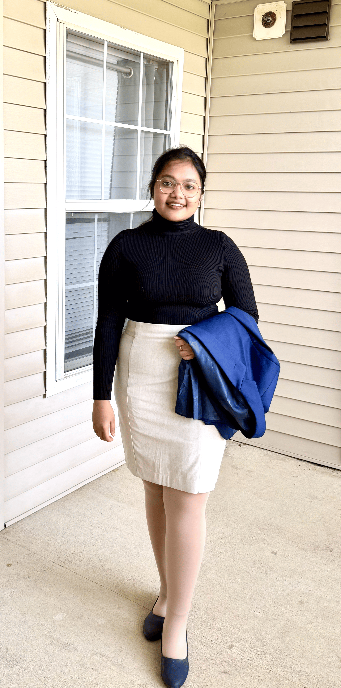

Welcome to my webpage!
About
Welcome! I'm Samata Das, a third-year Statistics Ph.D. candidate at Penn State University. I am passionate about building adaptable, computationally efficient, and interpretable statistical methods. You can find more details about my current projects below—I'd love to connect and discuss them! I'm also always eager to explore new approaches and collaborations for methodological improvements.

- Email: smd7237@psu.edu
- City: State College, Pennsylvania, USA
- Degree: Ph.D.
Education
-
Pennsylvania State University, USA (Doctoral Student, Department of Statistics)
Aug 2024 - Now
-
University of Calcutta (Lady Brabourne College), Department of Statistics
2017 - 2020
University of Kalyani, Department of Statistics
2020 - 2022
Academic Coursework
-
Linear Algebra, Probability and Measure Theory, Real Analysis, Differential Calculus, Multivariate Calculus, Numerical Analysis, Combinatorics, Statistical Inference, Decision Theory, Bayesian Statistics, Regression Analysis, Statistical Simulation and Data Analysis, Time Series Analysis, Stochastic Process, Applied Multivariate Analysis, Non-Parametric Inference, Advanced Data Analytics, Advanced Operation Research, Linear Models,Analysis of Variance,Design of Experiment, High Performance Cluster Computing for Astrophysics, Advanced Statistical Genomics: Probabilistic Models and Machine Learning for Modern Genomics, Natural Language Processing.
Work Experience
-
Graduate Teaching Assistant, Pennsylvania State University
- Stat414: Introduction to Probability Theory August 2024 – April 2025
- Summer School in Statistics for Astronomers June 2025 & June 2026
- Stat 401: Experimental Methods May 2025 – June 2025
- Stat508.1WC: Applied Data Mining and Statistical Learning August 2026 – December 2026
-
Graduate Research Assistant (under Professor Hyebin Song's and Professor Hyunk Suk Tak's guidance), Institute of Computational and Data Sciences (ICDS) at Pennsylvania State University
August 2025 - July 2026
-
Guest Lecturer (Statistics), Lady Brabourne College, University of Calcutta
September 2023 - August 2024
-
Guest Lecturer (Statistics), Rajabazar Science College, University of Calcutta
September 2023 - August 2024
Ongoing-Projects
-
Latent Misfolding Estimation and Disease Prediction from Protein Entanglement Embeddings
August 2025 - Present
Build statistical and machine-learning models to infer latent protein misfolding states using sequence embeddings and structural embeddings, with the goal of predicting mutation-driven disease outcomes. The project integrates neural representations and logistic latent-variable models to identify entanglement regions that drive misfolding, quantify uncertainty, and provide biologically interpretable insights into how sequence and structural changes are associated with disease risk.
-
Inference on Multivariate Gaussian Processes via Deep Neural Networks for Astronomical Time Series Data Analysis
August 2025 - Present
Developing scalable likelihood-free inference methods for multi-band astronomical time-series data by using deep neural networks to approximate high-dimensional Gaussian-process likelihood surfaces. This work addresses the computational bottlenecks of classical GP models, enabling efficient analysis of LSST-scale datasets and improving the detection of faint astrophysical signals such as exoplanet variability, supernova precursors, and cross-band correlated events.
-
Partial Identifiability in Latent Misfolding Models for Protein Disease Prediction
October 2026 -
This work is going to develop a statistically principled framework for inferring latent protein misfolding from entanglement-related structural features when direct observations of misfolding are unavailable. By characterizing the conditions under which the misfolding mechanism is identifiable—and deriving bounds when full identification is impossible—the model provides transparent uncertainty quantification for both latent misfolding status and disease risk. Unlike black-box predictive models, this approach explains disease predictions through an interpretable causal pathway, Entanglement Features - Latent Misfolding - Disease Outcome.
Publication
Research Papers
-
Rijji Sen, Samata Das(2024).Analysing Cardiovascular Risk Factors in the monitoring of Heart Disease: Leveraging Machine Learning Tools. In Dr.Sandeep Poddar & Dr. Waliza Ansar (Ed.), Tipping Boundaries of Sustainable Development:Concern, Advances,and Applications Its Intersection with Health and Well-Being. Nova Science Pub- lishers(New York)
2024
https://doi.org/10.52305/GRNV5452 -
Modeling Dependence Structures in Astronomical Multi-Band Time Series Data via Multi-Output Gaussian Processes
2026
This work presents a unified multi-output Gaussian process framework for modeling multi-band astronomical light curves, offering researchers both covariance-based and latent-process approaches to better analyze phenomena like AGN variability and continuum reverberation mapping.
https://doi.org/10.48550/arXiv.2607.21431
Awards and Honors
-
Awarded the Rising Researcher accolade by the Institute for Computational and Data Scieneces, Pennsylvania State University
2025 - 2026
-
Recipient of Jack and Eleanor Pettit Scholarship in Science award, offer to incoming students with overall outstanding background at Pennsylvania State University
Spring 2025
-
Recipient of Vollmer-Kleckner Scholarship in Science award, offer to incoming students with overall outstanding background at Pennsylvania State University.
2024 - 2025
-
Indira Gandhi (Former Prime Minister of India) Single Girl Child Scholarship Issued by. University Grant Commission, Government of India
2020 - 2022
-
Inspire Scholarship Issued by the Department of Science and Technology, Government of India. (Description: Meritorious Students with aggregate marks within the top 1% of their Higher Secondary(12th) examination of any State/Central Education Board in India is eligible)
2017 - 2022
Contact
Address
418, Thomas Building, Pennsylvania State University